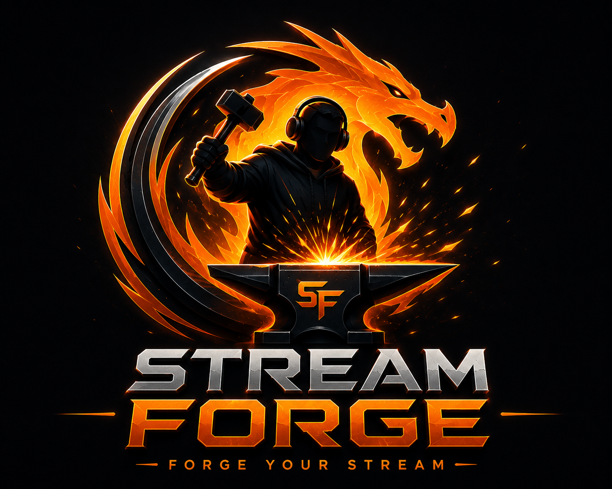

Install Stream Forge
Download the latest Windows installer from GitHub Releases and install it. Windows SmartScreen may warn while Alpha builds remain unsigned.

STREAM FORGELearn the forge
Start with Platform Hub, connect your broadcast software, run Quick Setup, check Browser Source audio, then test before going Public.
Quick start
Download the latest Windows installer from GitHub Releases and install it. Windows SmartScreen may warn while Alpha builds remain unsigned.
Platform Hub is the starting point for connecting your broadcast engine and platform workflow.
Enable the broadcast application's WebSocket server and connect Stream Forge. PRISM uses the same OBS-compatible WebSocket path.
Use Set Up OBS For Me or the equivalent PRISM setup action. Stream Forge creates or repairs its recommended scenes and Browser Sources without intentionally duplicating them.
Your gameplay capture remains your choice. Add the game/window/capture source you want to the Gameplay scene in your broadcast software.
Check the Browser Source audio settings below, then run a short Unlisted stream and listen from the viewer side before your first Public stream.
Scenes vs Browser Sources
A Scene is the full screen/layout your viewers see — for example Starting Soon, Gameplay, BRB, Music or Ending.
A Browser Source is one item placed inside a Scene — for example an alert overlay, music bar, song request overlay, logo or community/avatar layer.
Browser Source audio
Automated scene/source creation is useful, but the final Browser Source audio check should stay visible and under your control.
Open each source's Properties and enable Control audio via OBS for:
You normally do not need Browser Source audio for:
Afterwards, make sure expected audio sources appear in the mixer and are not muted.
Live Docks
The Live Docks hub puts frequently used live controls in one place. Individual docks intentionally hide normal app navigation so they stay focused while you're streaming.
Music & song requests
Use the built-in music system for playback, Now Playing information and the Music Dock's live controls for play/pause, skip, stop, mute and volume.
Viewer-requested tracks enter Stream Forge's request queue. When the stream enters Ending, Stream Forge stops active playback and clears pending requests so the jukebox does not restart your outro.
Remote control
Use Stream Forge Remote on your local network for convenient scene, music and stream controls from another device. Pair through the built-in QR workflow rather than exposing Stream Forge control ports directly to the public internet.
Backup & updates
Create a Full Backup before major experiments or configuration changes. Stream Forge's backup system is designed to preserve your streamer data and setup.
Use Stream Forge's update check or the public GitHub Releases page. Once the newer version is installed and opens correctly, you can delete the older downloaded installer .exe. Do not delete installed application or data folders.
Ready?
The release page includes the installer and SHA256 checksum.